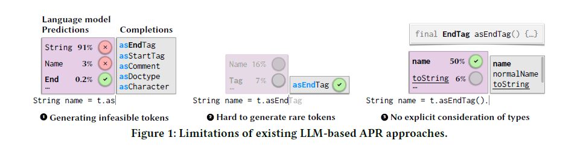
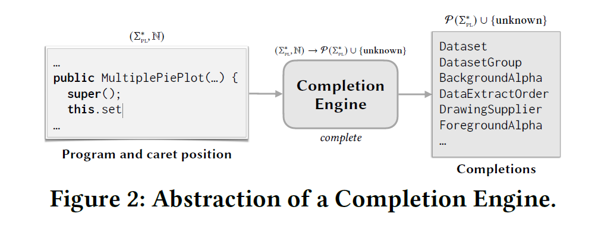
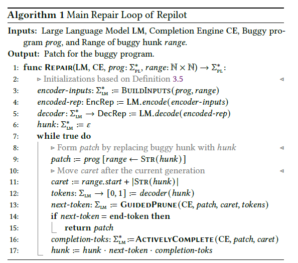
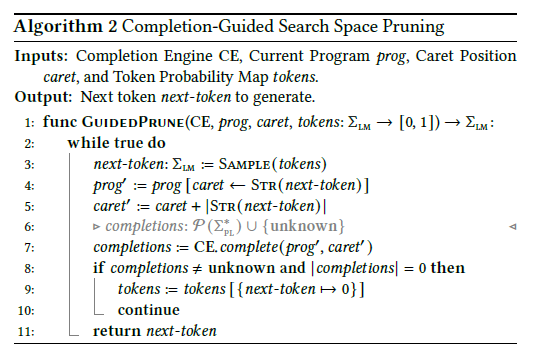
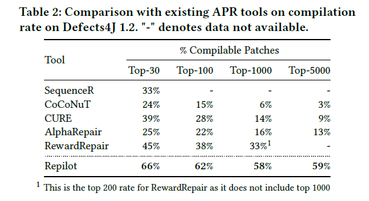

读paper8-Copiloting_the_Copilots
读paper8：Copiloting the Copilots
Copiloting the Copilots: Fusing Large Language Models with Completion Engines for Automated Program Repair
https://github.com/ise-uiuc/repilot
INTRODUCTION

现有 LLM 在 APR 工具上的局限性的三个场景：
- 生成不可行的token：即91%概率会生成
asString()，而不是代码中的asEndTag()- 相当于LLM从其学习的知识库中选择了概率最大的结果，但是不是针对该项目代码的修复（无导向性，无针对性
- 很难生成少见的token
- 比如
asEndTag()这种更自定义的方法名，就很难生成 - 原因其实还是跟上一个场景类似，没有针对当前项目进行学习
- 突然想起一个办法，先让LLM分析所有代码，再去进行缺陷检测与修复，但是这个要怎么实现呢。。。。。
- 比如
- 没有明确的类型考虑
- 对于自定义的实体类，显然我们的返回值是
EndTag对象，但是LLM并不会学习到这一点 - 所以原因其实还是与前面一样，LLM没有对这个项目的代码做特定学习，只是按照自己训练得到的结论进行生成
- 对于自定义的实体类，显然我们的返回值是
主要idea是将 LLM 自回归令牌生成比作人类开发人员编写的代码，Completion Engine 可以提供实时更新数据来检查 human/LLMs 编写的部分代码是否有效。Repilot 首先使用 LLM 来提供在补丁中生成下一个令牌的概率，然后查询 Completion Engine ，通过动态地归零无效令牌的概率来修改概率列表。然后我们可以从新的概率列表中抽取样本来选择下一个令牌。比如图1.1中的String和Name这两个token就会被直接删掉。
也即使用Completion Engine 来对LLM进行指导，Completion Engine 熟悉待修复的代码，但无法进行修复，LLM 能够提供修复方案，但是不能保证方案符合待修复的代码，两者互补以提高修复正确性。
PRELIMINARIES
本来不想看，但是如果想看懂后面的算法实现，最好还是看懂这些符号表示
Languages with Static Checking
静态检查语言是在编译时进行类型检查的编程语言。如cpp，java
Abstraction of Completion Engines
Completion Engine 的主要任务就是为部分生成的代码的继续生成提供建议和指导。
Completion Engine
一般来说，Completion Engine 是一个值对：
其中 是目标语言的字符集 ， 是是一个函数，用于在某个插入位置获取程序的补全项，如果Engine无法根据代码上下文确定建议的补全内容，则返回未知（比如完成变量声明的时候，就不需要继续补全）

Strict Completion Engine
一个Strict Completion Engine不应该给出不正确的建议，也即原文中提到的 given a program feasible at ，当然，这里还会涉及到 Static Feasibility of A Partial Program 这个概念，原文中也有明确定义。
APPROACH
Repilot关于于single-hunk bug的修复，也就是说在bug精准定位的情况下，我们只需要改变一小块连续代码就可以解决的修复场景。
单块错误（single-hunk bug）指的是在代码中的一个连续区域（或“块”）内出现的错误。通常，这种错误可以通过修改代码中的一个小范围来修复。
Repilot将修复问题视为填空任务。首先用一个掩码标记（<SPAN>）替换有缺陷的代码块，然后使用LLM根据周围代码上下文直接生成修复后的代码块，以替换该标记。这倒是经典思路。
Overview

算法模型如上图，整体的循环过程就是LLM生成token以及Completion Engine处理token的过程。
- LLM生成token，会给出一个格式为
<token值,概率>的格式为map的搜索空间 Search Space - 对每个token检查 feasibility ，Repilot首先检查是否 hits the memorization（which stores the tokens that are known to be feasible or infeasible）（相当于一个缓存，实现形式是类似于前缀树，后面再展开）。
- 如果命中缓存且发现不可行，其概率会归零
- 如果没有命中缓存，由Completion Engine来判断是否需要概率归零
- Completion Engine判断结果（feasible or infeasible）会存入缓存
- 如果一个token被接受
- 我们驱动Completion Engine去完成整个token的补全（比如如中as后的
End和Tag两个token的补全） - 在生成特殊的 end-token 时循环结束.

核心还是Search Space的调整

其中算法第八行会提前检查token是否可用（概率是否为0）并在第九行会存储被认定为不合理的token
Result

一些想法
Completion Engine确实是不错的想法，但我认为并没有从根本上解决问题。
回顾最开始在Introduction中提到的几个问题，我认为问题的核心其实更侧重于我们所尝试的修复没有针对性，而正确性只是其中一方面，如果LLM生成的token全都是错的，那么Completion Engine再强大也没有用。
所以正确性只是修复的一方面，另一方面应该是让LLM生成的token更加有针对性，应该通过一种方式让LLM解析、学习当前待修复部分的整体代码，提出有针对性的修复计划，然后判断是否正确。
但一般来说，数据集都是一些程序切片或者代码文件，项目级的数据集更是天方夜谭。但如果缺失对于整个项目的理解，修复工作就相当于缺少了一个很强的语义参考，而只能回归到正确性判断上。。。。。。比如返回值类型这种，就很难判断。
所以总体来说两方面把：
- 将缺陷修复的参考范围扩大到整个项目，理解、参照整个项目的语义，进行修复方案的提出
- 类似于上一篇的RAG思路，通过外部信息对生成进行增强
但是整体上都是针对LLM的增强和改进